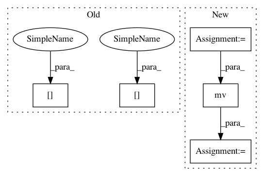

59562fbb1d97a00c04719b9a8e2b9cf69df54571,tests/grads_utils.py,ComplexGradsUtils,algorithmic_gradKL,#ComplexGradsUtils#Any#Any#Any#,114
Before Change
grad_KL[0] += target_r[i] * rotated_grad[0] / float(len(all_bases))
grad_KL[1] += target_r[i] * rotated_grad[1] / float(len(all_bases))
grad_KL[0] -= (
self.nn_state.probability(space[i], Z)
* self.nn_state.rbm_am.effective_energy_gradient(space[i])
/ float(len(all_bases))
)
return grad_KL
After Change
grad_KL[0] += target_r[i] * rotated_grad[0] / float(len(all_bases))
grad_KL[1] += target_r[i] * rotated_grad[1] / float(len(all_bases))
probs = self.nn_state.probability(space, Z)
all_grads = self.nn_state.rbm_am.effective_energy_gradient(space, reduce=False)
grad_KL[0] -= torch.mv(
all_grads.t(), probs
) // average the gradients, weighted by probs
return grad_KL
In pattern: SUPERPATTERN
Frequency: 3
Non-data size: 5
Instances
Project Name: PIQuIL/QuCumber
Commit Name: 59562fbb1d97a00c04719b9a8e2b9cf69df54571
Time: 2019-12-23
Author: emerali@users.noreply.github.com
File Name: tests/grads_utils.py
Class Name: ComplexGradsUtils
Method Name: algorithmic_gradKL
Project Name: ncullen93/torchsample
Commit Name: 6ddf825a4aa1bcf3a35bba8d36bc433fe5ebaa39
Time: 2017-04-24
Author: ncullen@Nicks-MacBook-Pro.local
File Name: torchsample/utils.py
Class Name:
Method Name: th_nearest_interp_3d
Project Name: PIQuIL/QuCumber
Commit Name: 59562fbb1d97a00c04719b9a8e2b9cf69df54571
Time: 2019-12-23
Author: emerali@users.noreply.github.com
File Name: tests/grads_utils.py
Class Name: DensityGradsUtils
Method Name: algorithmic_gradKL
Project Name: PIQuIL/QuCumber
Commit Name: 59562fbb1d97a00c04719b9a8e2b9cf69df54571
Time: 2019-12-23
Author: emerali@users.noreply.github.com
File Name: tests/grads_utils.py
Class Name: ComplexGradsUtils
Method Name: algorithmic_gradKL